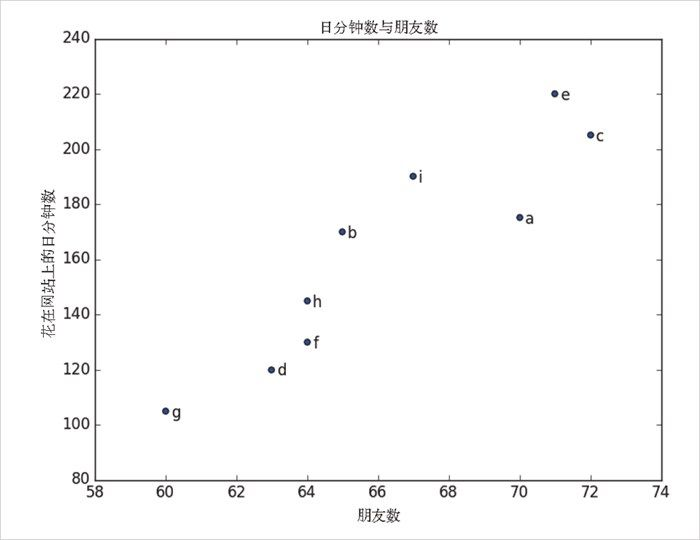
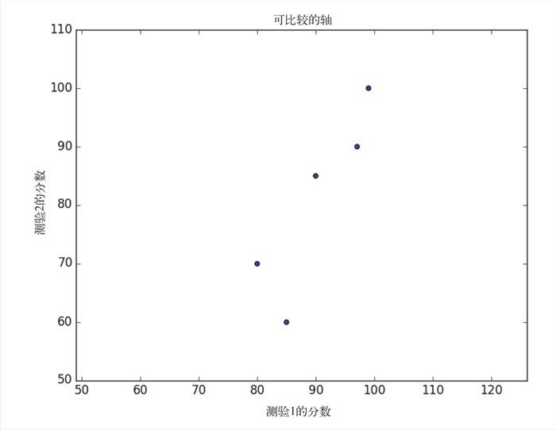

3.4 散点图
散点图是显示成对数据集的可视化关系的好选择。比如，图 3-7 显示了你的用户们已有的朋友数和他们每天花在网站上的分钟数之间的关系：
friends = [ 70, 65, 72, 63, 71, 64, 60, 64, 67]
minutes = [175, 170, 205, 120, 220, 130, 105, 145, 190]
labels = ['a', 'b', 'c', 'd', 'e', 'f', 'g', 'h', 'i']
plt.scatter(friends, minutes)
# 每个点加标记
for label, friend_count, minute_count in zip(labels, friends, minutes):
plt.annotate(label,
xy=(friend_count, minute_count), # 把标记放在对应的点上
xytext=(5, -5), # 但要有轻微偏离
textcoords='offset points')
plt.title("日分钟数与朋友数")
plt.xlabel("朋友数")
plt.ylabel("花在网站上的日分钟数")
plt.show()

图 3-7：朋友数与花在网站上的分钟数之间的关系散点图
当你分散了可比较的变量，如果让 matplotlib 选择刻度，可能会得到一个误导性的图，如图 3-8 所示：
test_1_grades = [ 99, 90, 85, 97, 80]
test_2_grades = [100, 85, 60, 90, 70]
plt.scatter(test_1_grades, test_2_grades)
plt.title("Axes Aren't Comparable")
plt.xlabel("测验1的分数")
plt.ylabel("测验2的分数")
plt.show()
图 3-8：带有无法比较的轴的散点图
如果我们引入对 plt.axis （"equal" ）的调用，图形（图 3-9）会更精确地显示大多数变化是发生在测验 2 上的。

图 3-9：带有可比较的轴的同一个散点图
以上这些内容对于开始进行可视化已经足够了，本书后面还会讲解更多关于可视化的知识。